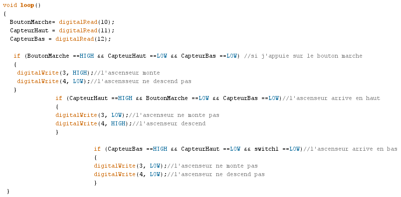

Enseignement de Numérique et Science Informatique en terminale
Les conditions if else elif en Python
Sommaire de cette page :
1. Les fonctions natives (builtin) if else elif1
2.
3.
4.
5.
1. Les fonctions natives (builtin) if else elif
| commentaires | ||
|---|---|---|
| langages | sur une seule ligne | sur un bloc de plusieurs lignes |
c |
// mon commentaire |
/* mes lignes de commentaire */ |
javascript |
// mon commentaire |
/* mes lignes de commentaire */ |
python |
# mon commentaire |
""" mes lignes de commentaire """ |
HTML |
<!-- mon commentaire --> |
|
CSS |
/* mes lignes de commentaire */ |
|
2. *********************************** 
Donner des noms clairs et précis qui permettent de comprendre ce que représente ce nom : compteurDeClic ; nombreDeVies ; niveau ; phraseDeBienvenue ; decomposeNombreEnBase (nombre, base). Ne vous faites pas plaisir en écrivant des noms de variables ou de fonctions drôles dont vous serez les seuls à en comprendre le sens !
Exemples de mauvais noms de variables :
- int to_to ;
- float DuchmolANous2 ;
- boolean 45ghJ5H2 ;
Exemples de noms de variables cohérents et explicites, avec du code commenté :
- int brocheNumero2 ; // contiendra l’état de la broche 2
- int compteurClic ; // pour mémoriser le nombre total de clic
N.B. : un standard international se dégage actuellement sur l’écriture des noms de fichiers, de fonctions, de variables, etc. :
- l’initiale du premier mot est en minuscule (cherchez l’erreur dans l’exemple suivant);
- les initiales des mots suivant sont en majuscule ;
- aucun espace ou caractère _ ne séparent les mots concaténés (mis bout à bout).
3. Indenter votre code
Indenter un programme, c'est décaler certaines parties du code afin de mieux comprendre sa structure, son fonctionnement. On peut utiliser une ou plusieurs tabulations ou simplement plusieurs espaces pour indenter du code.
Code (en c) indenté :
Remarque : dans le code ci-dessus, le nom des fonctions en orange respecte les conventions décrites précédemment, mais pas les nom de variables (c’est un code ancien).
4. Copier/coller vos variables et portions de code identiques
Écrire une seul fois le nom de vos variables en tapant sur la clavier de l'ordinateur, lors de sa déclaration. Par la suite, il suffit de copier/coller le nom de chaque variable ou de fonction pour les utiliser. Cela permet d'éviter toutes erreurs de frappe et donc de problème par la suite ; de devoir chercher (parfois longtemps) l'erreur dans le programme.
5. Utiliser un logiciel créé pour le développement de code informatique
Les éditeurs conçus pour aider le développeur utilisent :
- la coloration syntaxique qui colore les différents classes d’éléments pour mieux les repérer et dépister des erreurs de codage ;
- la reconnaissance des mots réservés dans chaque langage (le fichier doit être enregistré avec l’extension permettant l’identification du langage : *.py = python ; *.c = langage c ; *.html ou *.htm = langage du web ; …), ces mots sont colorés ;
- la suggestion de termes à choisir dans une liste de mots connus (réservés ou déjà définis) commençant par les lettres que l’on a déjà saisies au clavier. Cela évite des erreurs de frappe.
Remarque : les exemples de codes ci-dessus montrent en orange les mots réservés et les noms de fonctions (en c) ; en bleu les constantes, ...
Exemples de logiciels libres : Notepad++ ; Geany ; Code::Block (pour le langage c) ; ...